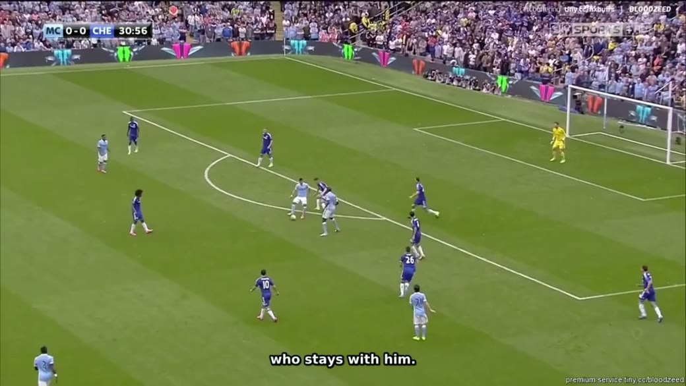

NeurIPS 2026Poster
SoccerNarrate: Event-Grounded Streaming Soccer Commentary with Macro-Window Preference Alignment
Aligns streaming commentary with match events so that key plays can be described accurately and on time.
戴智林
I am a master’s student in the Multimedia Computing Group at Nanjing University. My research focuses on video understanding and vision-language models, including streaming video captioning and efficient video-text representation learning.

SoccerNarrateNeurIPS 2026 · Real-time soccer commentary Watch demoNeurIPS 2026Poster
Aligns streaming commentary with match events so that key plays can be described accurately and on time.
CVIU 2026Journal article
Uses structured reasoning and reinforcement learning to improve detailed descriptions of people, objects, actions, and events in video.
ICCV 2025
Builds a lightweight video-text model for on-device inference, with evaluations on zero-shot retrieval and action recognition.
* Equal contribution.
SoccerNarrate was released on arXiv and accepted to NeurIPS 2026 as a poster.
VideoCap-R1 is published in Computer Vision and Image Understanding.
MobileViCLIP appears in the ICCV 2025 proceedings.